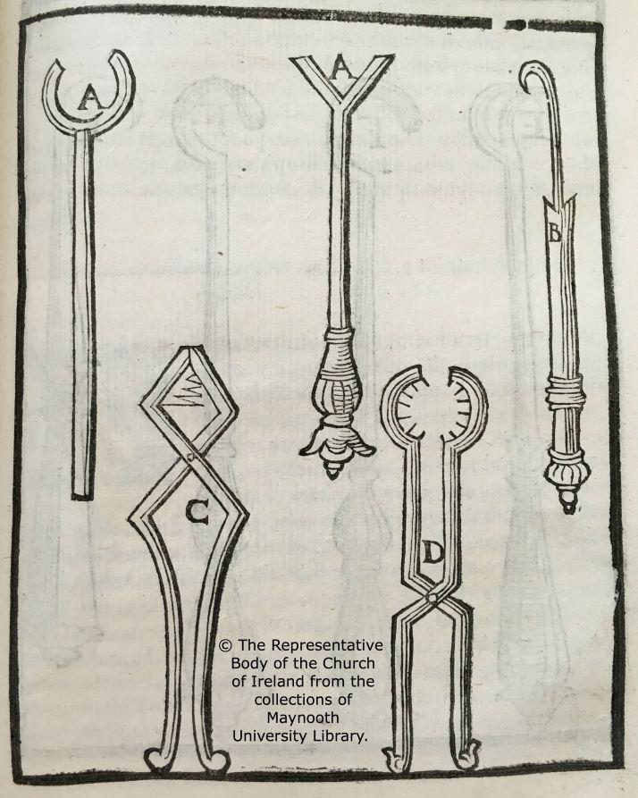

Surgical Instruments: An Art Historical and Scientific Analysis
a. Artist/ Group/Tribe
This illustration of surgical instruments is an anonymous creation likely produced by a medical scholar or an artist collaborating with physicians in the medieval period. Such illustrations were common in medical manuscripts and were often created by individuals skilled in both scientific understanding and artistic representation.
b. Historical and Socio-Cultural Context (Time-Frame)
The depiction of surgical instruments suggests a time frame from the middle ages, roughly between the 12th and 15th centuries. During this period, medicine and surgery were making significant advances in the Islamic world and Europe, often documented in texts and illustrations that served as educational tools. The image reflects a time when surgery was becoming more refined yet still heavily reliant on the artistry of the tools used.
c. Symbolism and/or Iconography
The illustration serves as a functional diagram rather than symbolic artwork. However, it represents the reverence for knowledge and the burgeoning intersection of art and science. The instruments themselves could symbolize the advancement of human understanding in the medical field, serving as icons of cultural and intellectual progress.
d. Stylistic Significance (Elements of Art/ Principles of Design)
The illustration embodies simple, clear lines and minimal embellishment, focusing on clarity and function over decoration. The design reflects Renaissance influences on scientific illustration, where precision and proportion became paramount in documenting scientific artifacts. The balance and harmony in the illustration emphasize the practical purpose of the depicted instruments.
e. Social / Cultural Inequities
Access to medical care during the period in which this image was likely created was limited to those of higher social status. Surgeons, unlike physicians, were often regarded with a mix of utility and social stigma, as their craft was seen as a manual art rather than an intellectual pursuit. The instruments illustrate a world where medical knowledge was restricted to specialized classes or genders, perpetuating inequities in healthcare.
f. Description of Disease & Etiology
The instruments depicted might have been employed in surgeries to address infections, fractures, or conditions like abscesses and cataracts. Understanding of disease etiology during the medieval period was rudimentary, often based on the four humors or imbalances in bodily fluids.
g. Pathology Signs/Signifiers of Illness
The instruments suggest common surgical procedures of the time, indicating prevalent health issues like sepsis, war injuries, or blindness. These conditions were recognized through visible symptoms such as swelling, heat, and pain as described in medical texts of the era.
h. Treatment
Treatments involved surgical interventions often performed without anesthesia, focusing on mechanical approaches to remove or alter tissues. Cauterization, bloodletting, and trepanation were among the methods employed to restore balance to the body and relieve symptoms of illness or injury.
i. Social Determinants of Illness
Illness in medieval societies was heavily influenced by social determinants such as class, occupation, and environment. Poor sanitation, malnutrition, and lack of access to clean water were major contributors to disease, impacting lower economic classes disproportionately.
j. References and Citations
1. Ackerknecht, E. H. (1967). A Short History of Medicine. Baltimore: Johns Hopkins University Press.
2. Baker, S. L. (1979). Medieval and Renaissance Medicine. Princeton: Princeton University Press.
3. Dusseau, A. B. (1985). Iconography in Medical Illustration. Chicago: University of Chicago Press.
4. Porter, R. (1997). The Greatest Benefit to Mankind: A Medical History of Humanity. New York: W.W. Norton & Company.
5. Wear, A. (1992). Medicine in Society: Historical Essays. Cambridge: Cambridge University Press.